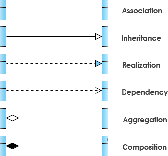
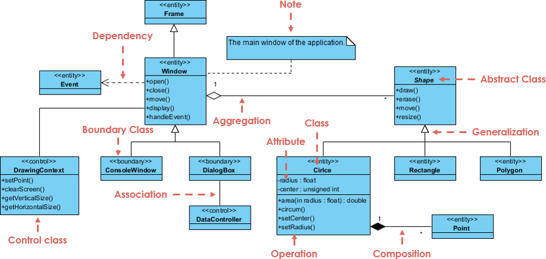

Design Patterns and UML
Princinples
The Open Closed Princinple(OCP)
A module should be open for extension but closed for modification. In other words, modules can be extened, without requiring them to be modified in existing source codes. This means that, with a llitle forethought, wd can add new features to existing code, without changing the existing code and by only adding new code. Symptoms of Rotting Design, rigidity, fragility, immobility, vicosity.The Liskov Substitution Princile(LSP)
Subclasses should be substitutable for their base classes. It alse derives freom the concept of Design by Contract(DBC), e.g. circle/ellipse dilemma.The Dependency Inversion Principle(DIP)
Denpand upon abstractions, do not depend upon concretions.The Interface Segregation Principle(ISP)
Many client specific interfaces are better than on general purpose interface.Principles of Package architecture
– The release reuse equivalency principle(REP), the granule of reuse is the granule of release.
– The common closure principle(CCP), classes that change together, belong together.
– The common reuse principle(CRP), classed that are not reused together should not be grouped together.
– The acyclic dependencies principle(ADP), the dependencies between packages must not form cycles.
– The stable dependencies principle(SDP), depend in the direction of stability.
Patterns of Object Oriented Architecture
Creational Patterns
- Abstract Factory, Factory Method
The DIP strongly recommends that modules not depend upon concrete classed. However, in order to create an instane fo a class, you must depend upon the concrete class. Abstract factory is a pattern that allows that dependency upon the concreate class to exist in on, and only one, place. - Template(extend), Builder(implement)
- Singleton
Avoid creating an object everytime. - Decorator, Prototype
- Abstract Factory, Factory Method
Structural Patterns
- Adapter, Facade
When inserting an abstract interface is infeasible because the server is third party software, or is so heavily depended upon that it can not easily be changed, and ADAPTER can be used to bind the abstract interface to the server.
The adapter is an object that implements the abstract interface to delegate to the server. Every methon of the adpater simply translates and then delegates. - Bridge
One of the problems with implementing an abstract class with inheritance is that the derived class is so tightly coupled to the base classes. This can lead to problems when other clients want to use the derived class functions without draging along the bagae of the base hiearchy, decouple an abstraction from its implementation.
Adapter makes things work after they’re designed, bridge makes them work before they are. - Proxy, Abstract Server
When a client depends directly on a server, the DIP is violated. Changes to the server will propogate to the client, and the client will be unable to easily use similar servers. This can be recified by inserting an interface between the client and the server, to produce a unified interface for a number of underlying and unrelated objects. - Flyweight, Composite, Decorator
- Adapter, Facade
Behavioral Patterns
- Observer
It often occurs that one element of a design needs to take some form of action when another element in the design dicovers that an event has occurred. However, we frequently donot want the detector to know about the actor. - Chain of Responsibility, Command, Interpreter, Iterator, Mediator, Mememnto
- State, Strategy, Visitor
- Template Method
- Observer
UML(Unified Modeling Language)
UML Diagrams
– Behavioral UML Diagram: Sequence Diagram: Activity diagram, Use Case diagram, Interaction Overview Diagram, Timing Diagram, State Machine Diagram, Communication Diagram, Sequence Diagram
– Structural UML Diagram: Class Diagram, Object Diagram, Component Diagram, Composite Structure Diagram, Deployment Diagram, Deployment Diagram, Profile DiagramUML Notations
– Relationships: Dependency Notation, Association Notation, Generalization Notation, Extensibility Notation
– Relationships between classes

– Class Diagram Example: Order System
– Class Diagram Example: GUI
